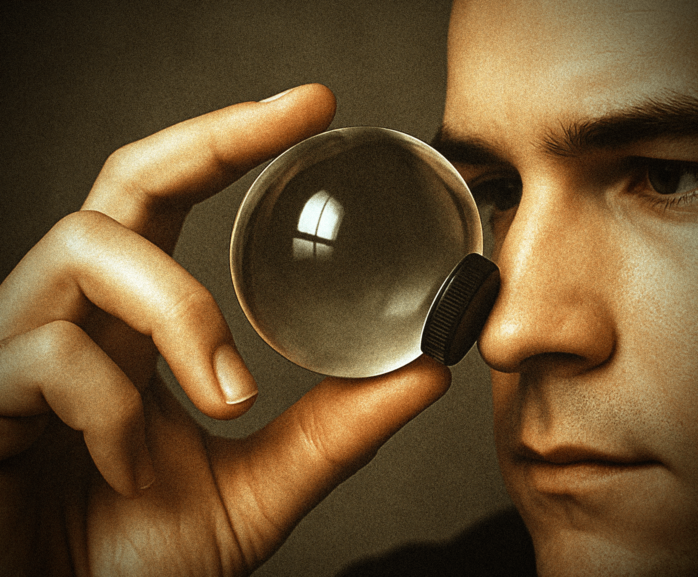
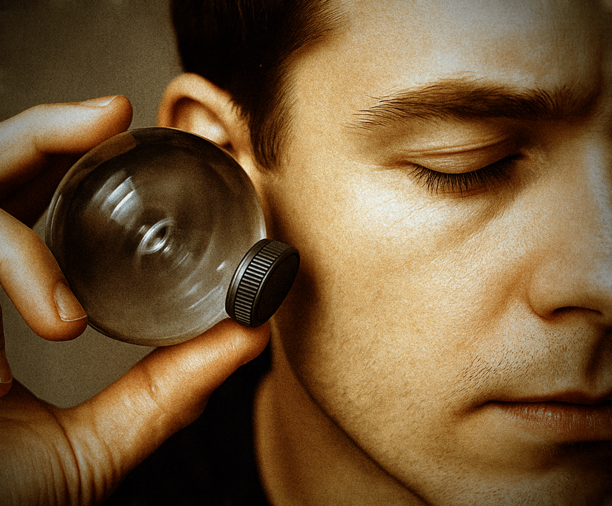

Preview
‘월드 라운드 비즈’는 세상을 둥글게 보여주고 들려주는 구슬 악세서리입니다.
바쁘고 피곤한 현대인들이 둥글둥글하게 살아갈 수 있도록 돕습니다.

Visual distortion
구슬의 굴절률에 따른 시각 왜곡을 분석하여,
세상을 부드럽고 따뜻하게 왜곡하는 기술을 완성했습니다.

Sound distortion
소리의 굴절과 주파수 변화를 분석해
세상의 소리를 둥글게 왜곡하는 기술을 만들었습니다.

Peace of mind
세상의 자극을 부드럽게 흡수해,
사용자에게 평화로운 감각을 전달하는 감성 기술입니다.